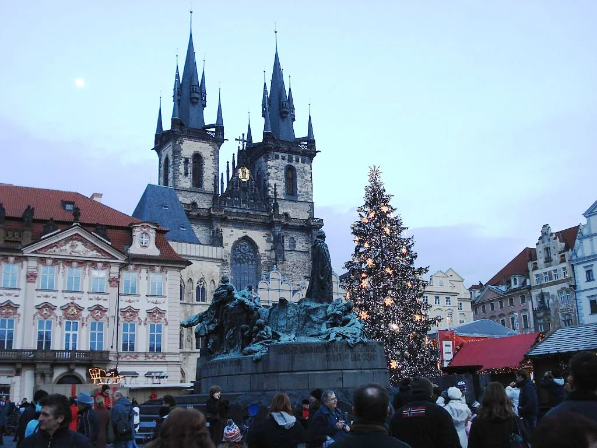

A winter travel journal
December,
elsewhere.
Baku, Tbilisi, Budapest, Vienna and Prague.
Explore the destinations5–12 December 2026 From Medina Three travelers
The atlas
Where to?
Five trips from Medina, with estimated costs per adult.